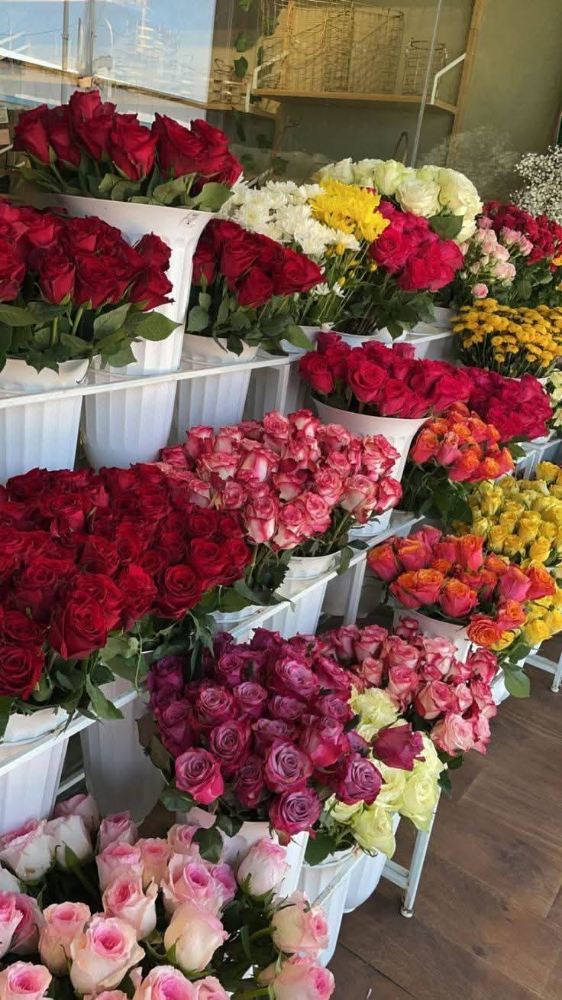
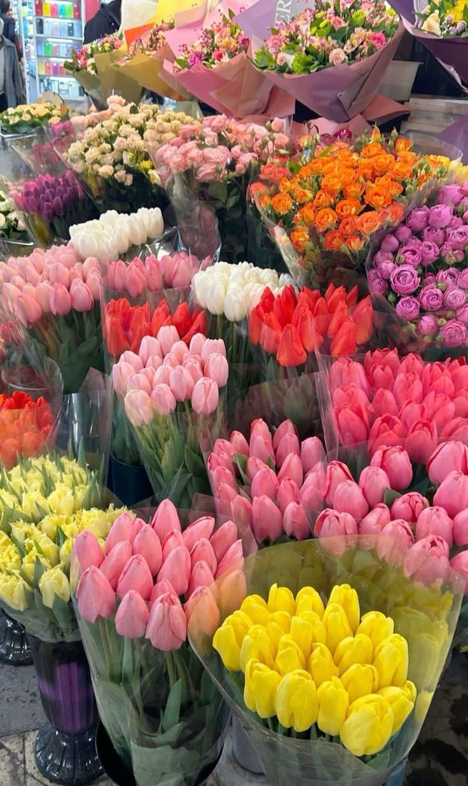
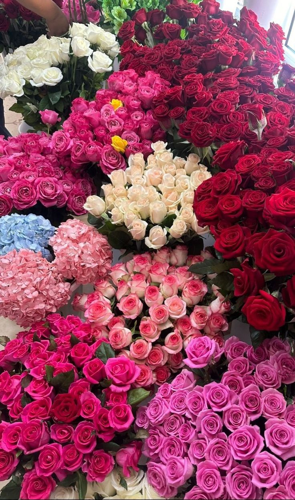

We are a family-owned flower boutique dedicated to spreading joy through nature's beauty since 2010.
Learn Our Story →Check out our full collection of pre-designed bouquets and floral arrangements.
View Menu →
Pick your own stems and create a unique bouquet that reflects your style.
Design Yours →
Discover our wide variety of premium flowers imported daily for maximum freshness.
See Collection →
"The most beautiful and fresh roses I have ever ordered in Morocco! Perfect service."
Read Reviews →Have questions or need a custom order? Our floral experts are here to help you.
Contact Now →